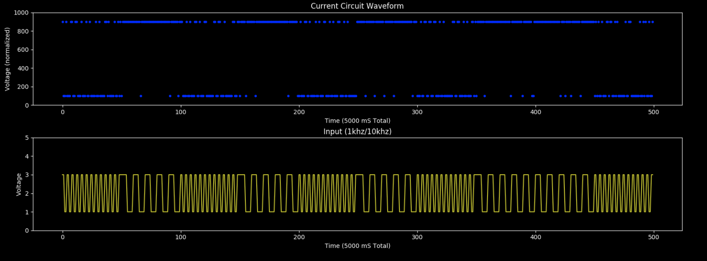
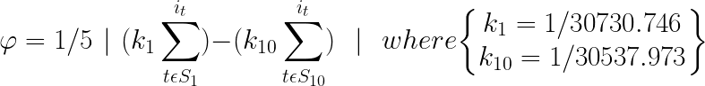
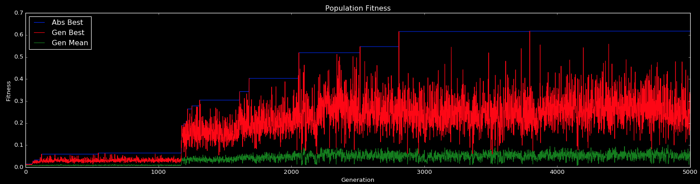

Tone Discriminator
Description
A recreation of Adrian Thompson's famous tone discriminator experiment. An FPGA is subject to random input of either 1khz or 10khz tone and must output a HIGH or LOW signal indicating appropriate classification. The duration for this evolutionary experiment is extraordinarily time consuming, taking nearly 3 weeks to complete the search process. Currently, only low-fitness classifiers have been able to evolve.
| Runtime | Population | Generations | Mutation | Crossover |
|---|---|---|---|---|
| 24 days | 50 | 5000 | 0.001 | 0.7 |

Fitness Function
|
 |
|
This fitness function forces the maximization of difference between two sets. Each set represents the sampled output of the FPGA in the presence of an tonal input and is summed before taking the absolute difference. The (k) values represent what Thompson referred to as "hardware constants" and were manually tuned specifically to the integrating operational amplifier that prior to the ADC readout from the microcontroller. They act to provide evolution with a small gradient in the fitness landscape for the incremental improvement of each circuit. |
Results
|
 |
|
The trajectory for circuit evolution in this experiment exhibits prolonged periods of stagnation while new optima are searched for. As shown in the plot, there are thousands of generations where the best isn't surpassed until some significant change dramatically improves fitness for the population's best and mean fitness scores. Disappointingly though, this particular evolutionary run was incapable of achieving the maximum fitness for discriminating between tones. |